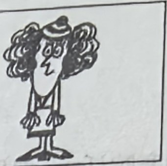
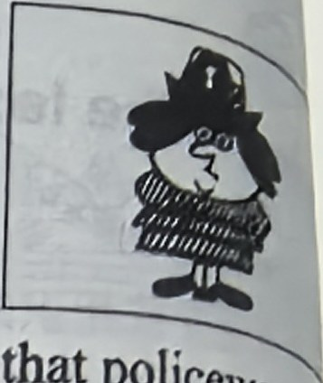
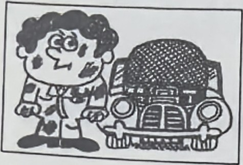
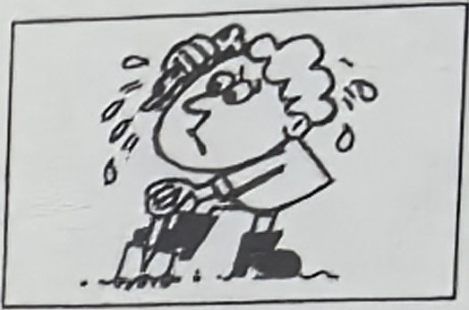
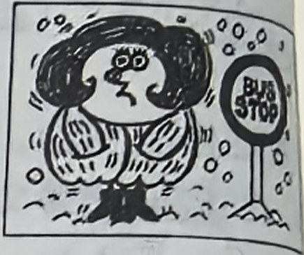
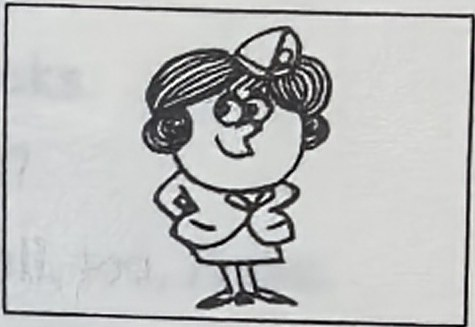
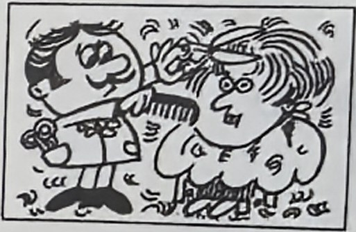
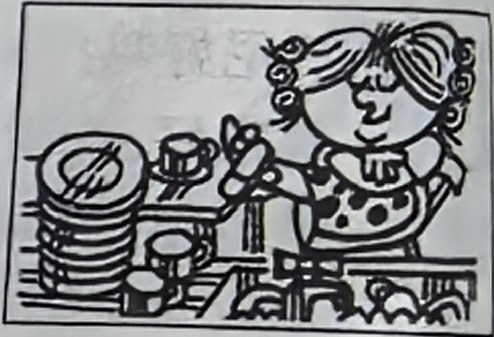
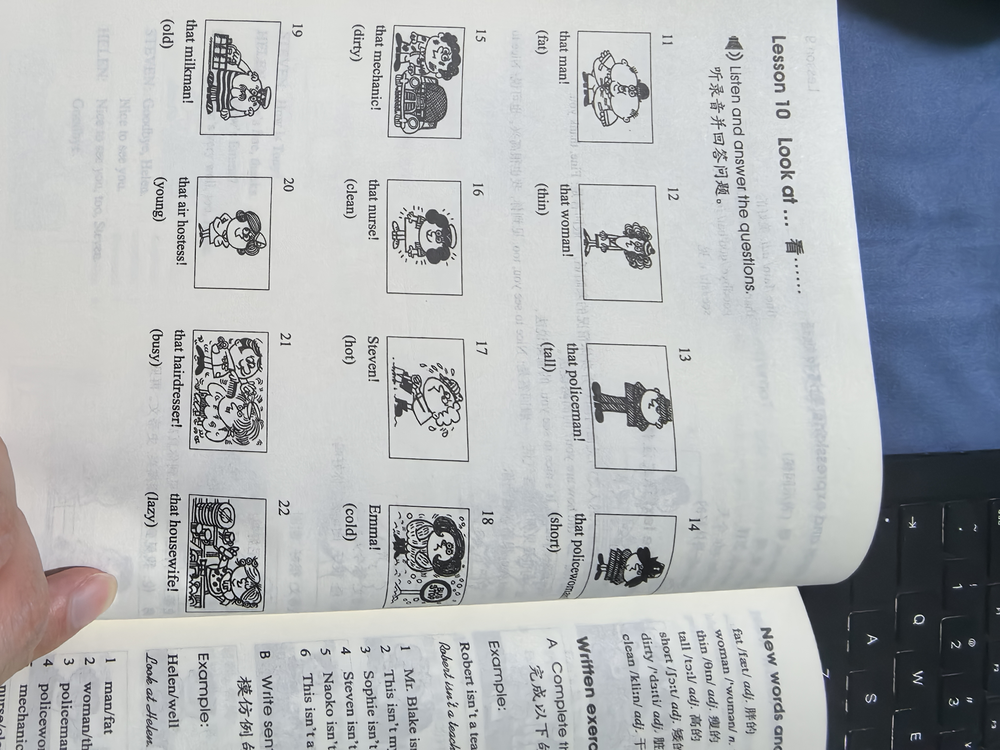
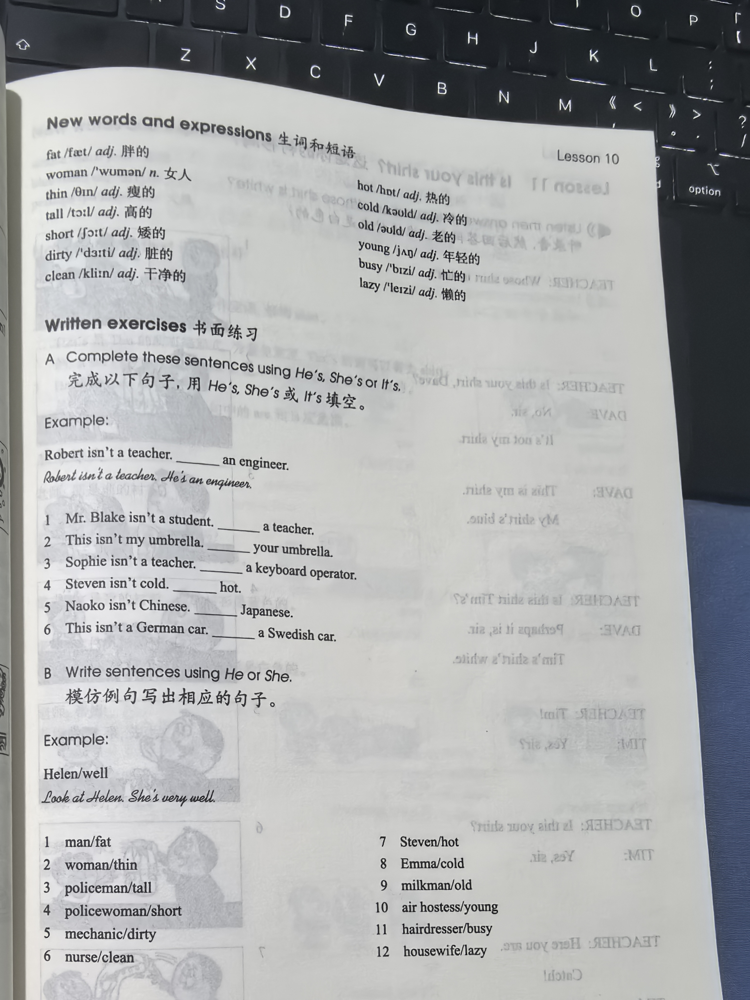

Lesson content · 课文
Lesson 10: Look at ... · 瞧……
Listen and answer the questions. 听录音并回答问题。








New words and expressions · 生词和短语
| Word · 单词 | Pronunciation · 音标 | Meaning · 词义 |
|---|---|---|
| fat | /fæt/ | adj. 胖的 |
| woman | /ˈwʊmən/ | n. 女人 |
| thin | /θɪn/ | adj. 瘦的 |
| tall | /tɔːl/ | adj. 高的 |
| short | /ʃɔːt/ | adj. 矮的 |
| dirty | /ˈdɜːti/ | adj. 脏的 |
| clean | /kliːn/ | adj. 干净的 |
| hot | /hɒt/ | adj. 热的 |
| cold | /kəʊld/ | adj. 冷的 |
| old | /əʊld/ | adj. 老的 |
| young | /jʌŋ/ | adj. 年轻的 |
| busy | /ˈbɪzi/ | adj. 忙的 |
| lazy | /ˈleɪzi/ | adj. 懒的 |
Practice · 课文练习
Written exercises · 书面练习
A. He’s, She’s or It’s
Complete these sentences using He’s, She’s or It’s. 完成以下句子，用 He’s、She’s 或 It’s 填空。
Example · 例句
Robert isn’t a teacher. He’s an engineer.
-
textbook: A. He’s, She’s or It’s — Mr. Blake isn’t a student. ____ a teacher.
-
textbook: A. He’s, She’s or It’s — This isn’t my umbrella. ____ your umbrella.
-
textbook: A. He’s, She’s or It’s — Sophie isn’t a teacher. ____ a keyboard operator.
-
textbook: A. He’s, She’s or It’s — Steven isn’t cold. ____ hot.
-
textbook: A. He’s, She’s or It’s — Naoko isn’t Chinese. ____ Japanese.
-
textbook: A. He’s, She’s or It’s — This isn’t a German car. ____ a Swedish car.
B. He or She
Write sentences using He or She. 模仿例句写出相应的句子。
Example · 例句
Helen / well → Look at Helen. She is very well.
-
textbook: B. He or She — man / fat
-
textbook: B. He or She — woman / thin
-
textbook: B. He or She — policeman / tall
-
textbook: B. He or She — policewoman / short
-
textbook: B. He or She — mechanic / dirty
-
textbook: B. He or She — nurse / clean
-
textbook: B. He or She — Steven / hot
-
textbook: B. He or She — Emma / cold
-
textbook: B. He or She — milkman / old
-
textbook: B. He or She — air hostess / young
-
textbook: B. He or She — hairdresser / busy
-
textbook: B. He or She — housewife / lazy
Practice worksheet · 配套练习
A. Questions
Write the correct questions in this dialogue. 为以下对话填上正确的疑问句。
Man: ____?
Woman: His name’s Steven.
Man: That’s a nice name. ____?
Woman: He’s American.
Woman: His car’s nice.
Man: ____?
Woman: It’s a Toyota.
Woman: It’s very nice.
-
worksheet: A. Questions — First question · 第一个问句
-
worksheet: A. Questions — Second question · 第二个问句
-
worksheet: A. Questions — Third question · 第三个问句
B. Structure
Fill in He’s, She’s or It’s. 用 He’s、She’s 或 It’s 填空。
-
worksheet: B. Structure — ____ an air hostess.
-
worksheet: B. Structure — ____ a policeman.
-
worksheet: B. Structure — ____ a German Mercedes.
-
worksheet: B. Structure — ____ a lazy housewife.
-
worksheet: B. Structure — ____ an old milkman.
-
worksheet: B. Structure — Look at that woman. ____ very tall.
-
worksheet: B. Structure — Look at that man. ____ very busy.
-
worksheet: B. Structure — My car isn’t dirty. ____ clean.
C. Situations
Choose: Hello. / How are you? / Goodbye. / Nice to see you. 选择恰当的词填空。
-
worksheet: C. Situations — How do you greet a friend?
-
worksheet: C. Situations — How do you ask about a person’s health?
-
worksheet: C. Situations — What do you say when you leave someone?
-
worksheet: C. Situations — How do you say it was good to see someone?
Original images · 原图对照
Expand a page to compare it with the transcription. Open the original in a new tab to zoom in.
展开原图核对文字，也可以在新标签页打开原图放大查看。
Lesson text and oral practice · 课文与口头练习
Open original · 打开原图 ↗ Download original · 下载原图


Vocabulary, notes and written exercises · 生词、注释与书面练习
Open original · 打开原图 ↗ Download original · 下载原图



Grammar practice · 语法练习
I. Answer the questions according to the example
Example:
- 1. Are you cold?
Are you hot?No, I'm not.
Yes, I am. - 2. Is that pencil long?
Is it short? - 3. Is that book new?
Is it old? - 4. Is that man fat?
Is he thin? - 5. Is your car dirty?
Is it clean? - 6. Are you a teacher?
Are you a student? - 7. Is Helen old?
Is she young? - 8. Is your room big?
Is it small? - 9. Is your brother short?
Is he tall? - 10. Are you French?
Are you German? - 11. Is it hot today?
Is it cold today? - 12. Is your skirt blue?
Is it white?
II. Answer using the cue
Example: Is that mechanic clean or dirty? (dirty) -> He isn't clean. He's dirty.
- Is that policewoman young or old? (young)
- Are you cold or hot? (cold)
- Is that keyboard operator tall or short? (tall)
- Is your handbag new or old? (old)
- Is a Volvo French or Swedish? (Swedish)
- Is Steven fat or thin? (fat)
- Is that boy good or bad at school? (good)
- Is that book thick or thin? (thick)
- Is your shirt big or small? (small)
Your notes and answers
Use this space for longer responses or exercises that do not have an individual answer box.